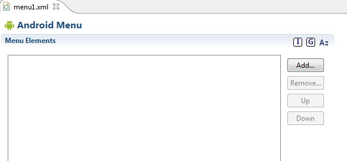
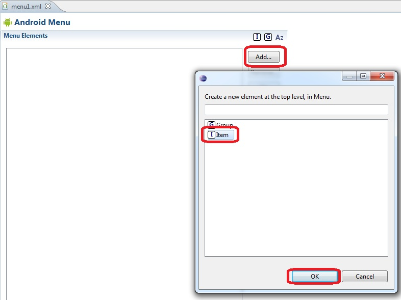
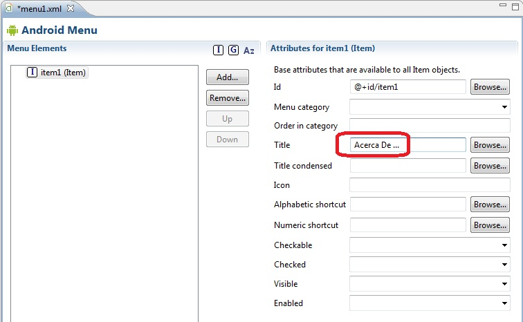
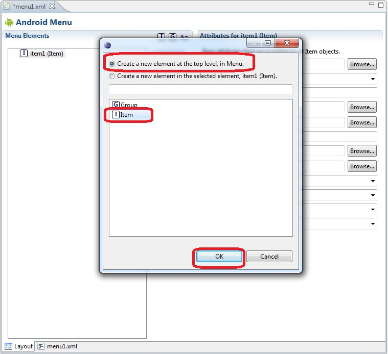
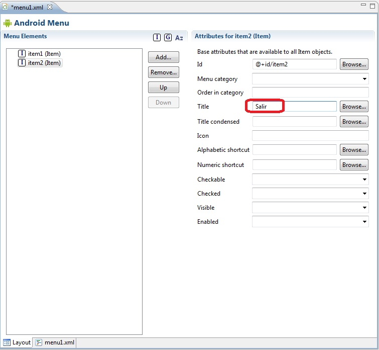
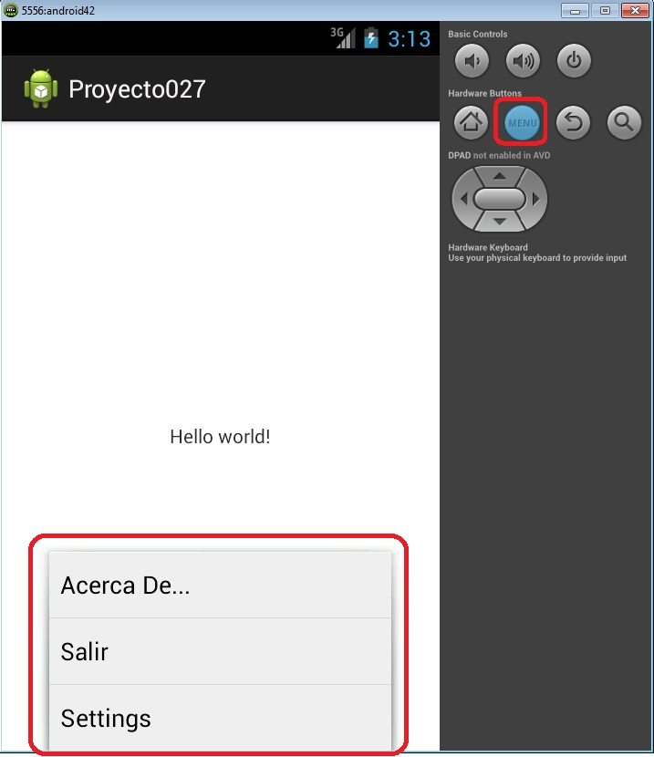

29 - Menú de opcionesYa se encuentra disponible el nuevo tutorial para aprender android con el nuevo entorno Android Studio propuesto por Google y que remplaza a Eclipse. |
En Android la implementación de un menú de opciones permite mostrar opciones de una forma estandarizada entre aplicaciones (esto hace que todos los programas tengan una vista de un menú muy parecidos)
Los menús aparecen en la parte inferior de la pantalla cuando el usuario presiona el botón Menú del celular.
La implementación del menú se puede hacer de forma similar a la interfaz visual de la aplicación mediante la creación de un archivo XML y la construcción del mismo empleando las herramientas que provee el ADT.
Confeccionar una aplicación que muestre un menú con dos opciones: una que visualice el "Acerca de..." (nombre de la aplicación, programador etc.) del programa y otra que finalice el programa.
El ADT ya creo el archivo XML para el activity principal y se encuentra localizado en la carpeta res/menu y se llama activity_main.xml
La intefaz del editor de menu que nos provee el plugin de Android para Eclipse es:
Procedemos a insertar la primera opción presionando el botón "Add", seguidamente seleccionamos "Item":
Luego nos queda inicializar como mínimo el título de que mostrará dicha opción:
Ahora nuevamente presionamos el botón "Add" para añadir la segunda opción. En el diálogo que aparece seleccionamos "Create a new element at the top level, in Menu", seguidamente seleccionamos "Item" y confirmamos:
Configuramos la propiedad Title de la segunda opción:
Paso seguido debemos sobreescribir los métodos onCreateOptionsMenu (que ya lo tenemos codificado en el archivo Java) y onOptionsItemSelected heredados de la clase Activity.
El código fuente de la clase Proyecto027Activity.java es:
package com.javaya.proyecto027;
import android.app.Activity;
import android.os.Bundle;
import android.view.Menu;
import android.view.MenuItem;
import android.widget.Toast;
public class MainActivity extends Activity {
@Override
protected void onCreate(Bundle savedInstanceState) {
super.onCreate(savedInstanceState);
setContentView(R.layout.activity_main);
}
@Override
public boolean onCreateOptionsMenu(Menu menu) {
// Inflate the menu; this adds items to the action bar if it is present.
getMenuInflater().inflate(R.menu.activity_main, menu);
return true;
}
@Override
public boolean onOptionsItemSelected(MenuItem item) {
switch (item.getItemId()) {
case R.id.item1:
Toast.makeText(this, "Programador: Diego (23/08/2011)",
Toast.LENGTH_SHORT).show();
break;
case R.id.item2:
finish();
}
return true;
}
}
En el método onCreateOptionsMenu creamos un objeto de la clase MenuInflater y mediante el método inflate vinculamos el identificador del archivo de recursos: R.menu.activity_main y el objeto de la clase menu que llega como parámetro. Debemos retornar true:
@Override
public boolean onCreateOptionsMenu(Menu menu) {
// Inflate the menu; this adds items to the action bar if it is present.
getMenuInflater().inflate(R.menu.activity_main, menu);
return true;
}
En el método onOptionsItemSelected debemos disponer un switch para identificar cual de las opciones del menú fue seleccionado. El parámetro item de la clase MenuItem tiene la referencia del objeto que fue pulsado. Luego obtenemos su Id llamando al método getItemId y a través del switch verificamos con el recurso que coincide y procedemos a efectuar la actividad respectiva (si se selecciona la primer opción mostramos un mensaje mediante la clase Toast, si se seleccionó la segunda opción llamamos al método finish para finalizar el programa:
@Override
public boolean onOptionsItemSelected(MenuItem item) {
switch (item.getItemId()) {
case R.id.item1:
Toast.makeText(this, "Programador: Diego (23/08/2011)",
Toast.LENGTH_SHORT).show();
break;
case R.id.item2:
finish();
}
return true;
}
Desde el emulador para activar el menú debemos presionar el siguiente botón:
Este proyecto lo puede descargar en un zip desde este enlace: proyecto027.zip